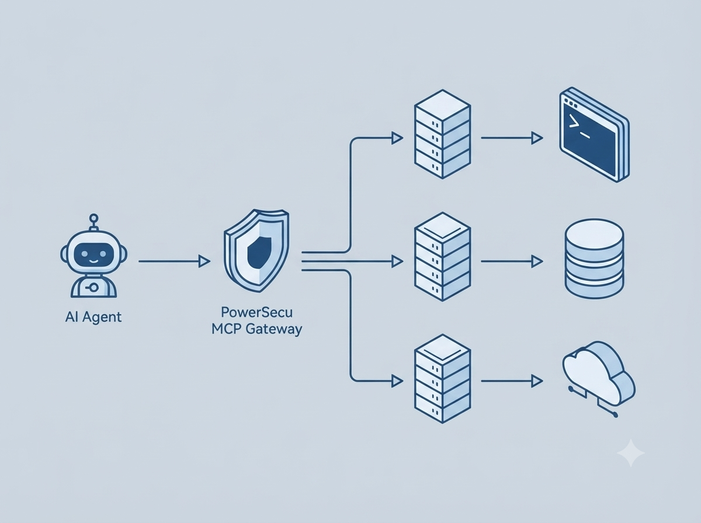

PowerSecu 솔루션
AI 에이전트 보급에 따라 MCP 서버를 관리하는 솔루션을 개발했습니다. 시장 조사, 분석, 기획, 개발, 배포 및 문서화를 담당했습니다.
기존 솔루션을 분석해 대상 고객의 실무 요구에 맞는 제품 방향을 정하고, Phase 3의 마일스톤과 이슈를 정리했습니다.
AI로 개발한 기능을 직접 테스트해 정규화와 재사용성 문제를 확인했습니다. 이를 바탕으로 초기 설계 오류를 수정하고 사용자 편의를 고려해 UX를 개선했습니다.